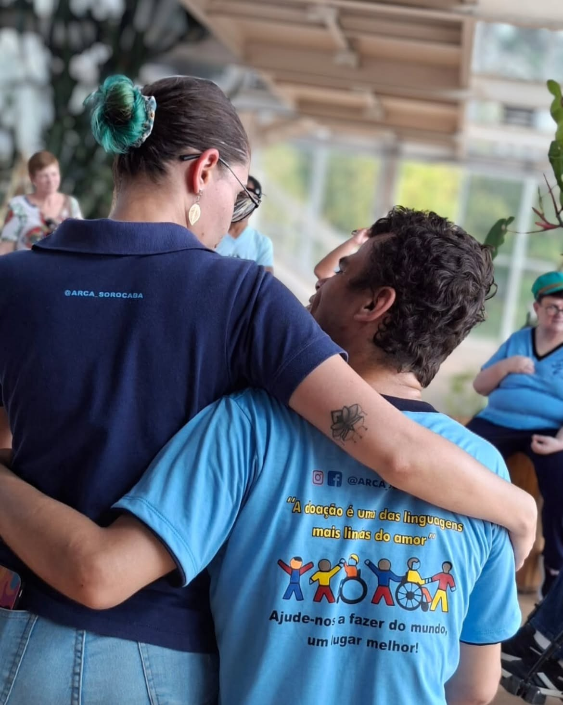

A doação é a linguagem mais linda do amor.
A ARCA Sorocaba é uma associação beneficente, sem fins lucrativos, que acolhe pessoas adultas com deficiência intelectual há mais de 10 anos. Aqui, a palavra que guia o cuidado é autonomia.
Faça a sua doação em menos de um minuto
Escolha entre doar uma vez ou todo mês, defina o valor e conclua pelo PIX ou pelo WhatsApp da ARCA. Qualquer valor ajuda.
1. Tipo de doação 2. ValorCom R$ 30 você mantém um dia de oficina.
Quero ajudar a ARCAPagamento seguro: o PIX cai direto na conta da ARCA.
A doação com cartão ainda não está disponível. Por enquanto, use o PIX ao lado ou avise a ARCA pelo WhatsApp.
Chave copiada. Obrigado por apoiar a ARCA. Agora abra o app do seu banco, escolha PIX, cole a chave e confirme o valor.
Uma casa que não abandona ninguém depois que a infância acaba
A ARCA Sorocaba é uma associação beneficente que acolhe pessoas adultas com deficiência intelectual. Aqui elas encontram oficinas, convivência, acompanhamento de equipe e, principalmente, autonomia.
A ARCA também acompanha e orienta as famílias, e integra a rede internacional L'Arche.
Conheça a ARCA
Quem melhor para falar da ARCA do que quem vive nela?
Eles não estão aqui porque não tinham outro lugar. Estão aqui porque este é o lugar deles.
Todo mundo cuida da criança com deficiência. E quando ela vira adulta?
Com um valor mensal que cabe no seu bolso, você mantém esta casa de portas abertas. Torne-se um Guardião da ARCA.
Ações solidárias que mantêm a casa
Feijoada, pizza solidária, pastel, almoço, noite de prêmios e bazar. As datas de cada evento são divulgadas no canal Amigos da Arca, no Instagram.